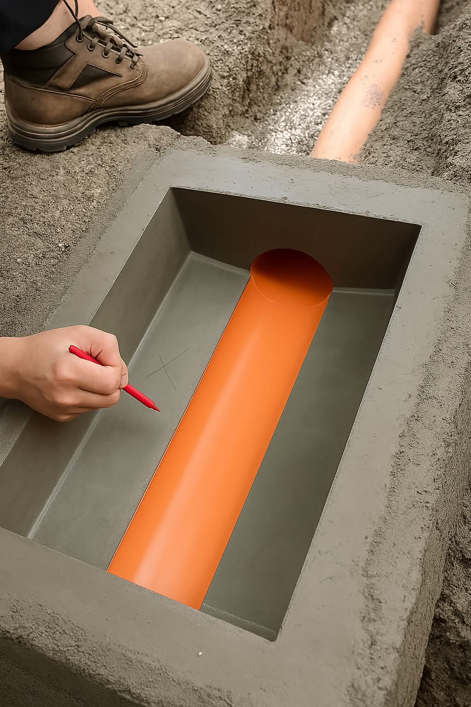
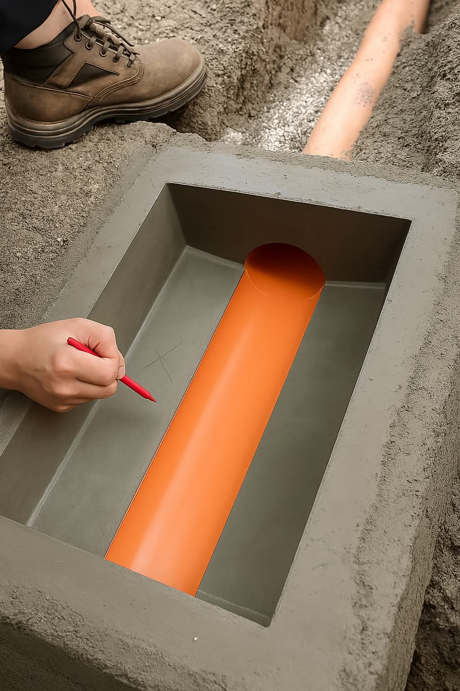

Comprehensive Drainage Solutions
Professional drainage installation and maintenance for residential and commercial properties.
Professional drainage installation and maintenance for residential and commercial properties.
Drainage works encompass the design, installation and maintenance of systems that remove water from properties. Effective drainage prevents water accumulation, protects foundations and maintains property integrity.
High-quality pipes designed for efficient water removal and minimal blockages.
Strategic collection points that prevent debris from entering the main system.
Proper grading ensures water flows naturally toward collection and disposal areas.

 
